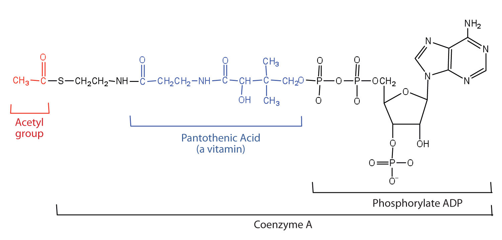
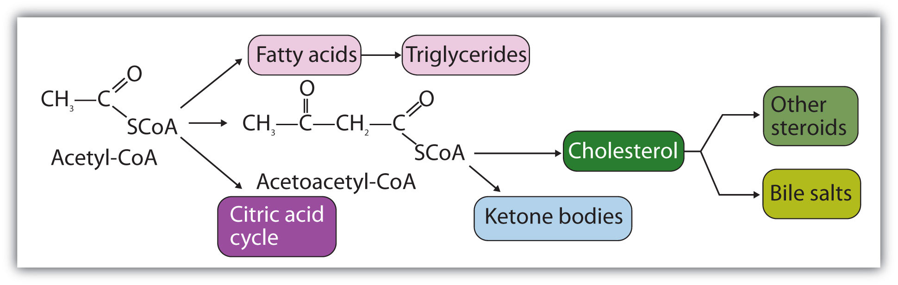

A metabolic pathwayA series of biochemical reactions by which an organism converts a given reactant to a specific end product. is a series of biochemical reactions by which an organism converts a given reactant to a specific end product. As you will learn in Section 20.5 "Stage II of Carbohydrate Catabolism" through Section 20.7 "Stage II of Protein Catabolism", there are specific metabolic pathways—which are different for carbohydrates, triglycerides, and proteins—that break down the products of stage I of catabolism (monosaccharides, fatty acids, and amino acids) to produce a common end product, acetyl-coenzyme A (acetyl-CoA) in stage II of catabolism.
Acetyl-CoA is shown in Figure 20.10 "The Structure of Acetyl-Coenzyme A (Acetyl-CoA)". The acetyl unit, derived (as we will see) from the breakdown of carbohydrates, lipids, and proteins, is attached to coenzyme A, making the acetyl unit more reactive. Acetyl-CoA is used in a myriad of biochemical pathways. For example, it may be used as the starting material for the biosynthesis of lipids (such as triglycerides, phospholipids, or cholesterol and other steroids). Most importantly for energy generation, it may enter the citric acid cycle and be oxidized to produce energy, if energy is needed and oxygen is available. The various fates or uses of acetyl-CoA are summarized in Figure 20.11 "Cell Chemistry".
Figure 20.10 The Structure of Acetyl-Coenzyme A (Acetyl-CoA)
Figure 20.11 Cell Chemistry
Acetyl-CoA plays a variety of roles in cell chemistry.
What is a metabolic pathway?
What vitamin is required to make coenzyme A?
A metabolic pathway is a series of biochemical reactions by which an organism converts a given reactant to a specific end product.
pantothenic acid